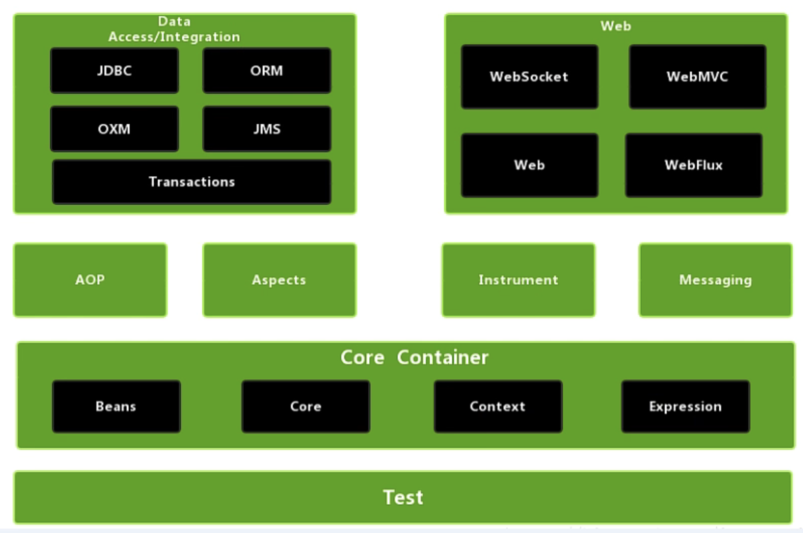

Spring简介
[!TIP|style:callout|label:Spring概述 |iconVisibility:hidden]
- Spring是一个轻量级的开源的JavaEE框架，为了解决企业应用开发的复杂性而创建的。
- Spring可以将简单的组件配置、组合成为复杂的应用，在Spring中，应用对象被声明式地组合，典型地是在一个XML文件里。Spring也提供了很多基础功能（事务管理、持久化框架集成等等），将应用逻辑的开发留给了你。
- IOC(控制反转)，把对象的创建交给Spring管理
- AOP(面向切面)，不修改源代码的情况下对功能进行增强
[!TIP|style:callout|label:Spring的形成 |iconVisibility:hidden] Spring的形成，最初来自Rod Jahnson所著的一本很有影响力的书籍《Expert One-on-One J2EE Design and Development》，就是在这本书中第一次出现了Spring的一些核心思想，该书出版于2002年。另外一本书《Expert One-on-One J2EE Development without EJB》，更进一步阐述了在不使用EJB开发JAVA EE企业级应用的一些设计思想和具体的做法
[!TIP|style:callout|label:EJB(Enterprise Java Bean)的问题 |iconVisibility:hidden]
- 运行环境苛刻
- 代码移植性差
- 重量级框架
[!TIP|style:callout|label:Spring框架的特点 |iconVisibility:hidden]
- 方便解耦，简化开发
- 通过Spring提供的IOC容器，我们可以将对象之间的依赖关系交由Spring进行控制，避免硬编码所造成的过度程序耦合。有了Spring,用户不必再为单实例模式类、属性文件解析等这些很底层的需求编写代码，可以更专注于上层的应用。
- AoP编程
- 通过Spring提供的AOP功能，方便进行面向切面的编程，许多不容易用传统OOP实现的功能可以通过AOP轻松应付。
- 声明式事物
- 在Spring中，可以从单调烦闷的事务管理代码中解脱出来，通过声明式方式灵活地进行事务的管理，从而提高开发效率和质量。
- 对其它框架的集成更加方便
- Spring不排斥各种优秀的开源框架，相反Spring可以降低各种框架的使用难度，Spring提供了对各种优秀框架（如Struts,Hibernate、Hessian、Quartz)等的直接支持。
[!TIP|style:callout|label:Spring核心架构图 |iconVisibility:hidden] 